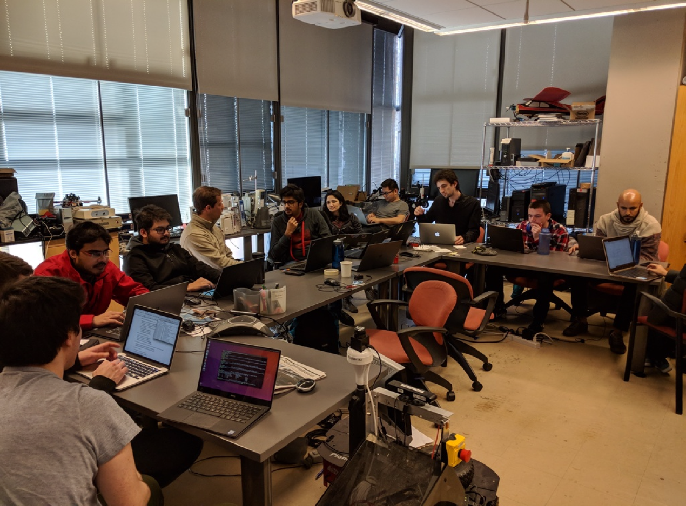

THE PROJECT
Atlas is a threat forecasting and intelligence visualization platform for security operators in emerging markets. I have been working on Atlas with a small team, devising high level product and system design and interfacing with users. I have been personally developing the webapp (
https://atlas.verstaan.com) while other engineers have been building out a mobile version.
THE PLATFORM

Atlas works by collecting incident data from user input, open digital sources, the dark web, and crowdsourced surveys.
The platform highlights patterns within and across datasets and compiles threat profiles of organized malicious groups within an area. This allows for analysts to more easily identify relevant trends dispersed across large data sets.

Curated intelligence can then be pushed to operators and clients in real time, allowing them to remain aware of events occuring around them and preempt attacks by visualizing threat probabilities in space-time units.
THE PROJECT
The final project for an Interactive Computer Graphics class was to create a 3D interactive world exploration game in the style of Minecraft. We worked on teams of three where I focused mainly on all of the procedural generation. Some of the features I implemented include:
- procedural terrain using fractal Brownian motion to generate height fields
- procedural rivers (linear and delta style) using L-Systems
- randomly placed biomes using a Voronoi grid and modifying terrain generation to account for different types of land
- procedurally generated and placed trees
- block removal and placement
- texture stylization
THE INSPIRATION
A friend and I were interested in the cybersecurity of embedded devices and the Internet of Things (IoT). We began talking with two professors at Penn about this field and about botnets, focusing in on the Mirai botnet that utilized over 600,000 infected IoT devices in multiple large scale DDoS attacks. We began research and discussions about this and potential solutions throughout our sophomore year, and then did further research on specific medical devices and communication protocols as we moved into the summer. We devised a high level solution inspired by the botnets we aimed to protect against and set out to build a prototype.
THE PROJECT
After researching Mirai and poring over the source code, we outlined a modified version of a reverse engineered botnet that could act as a security solution. Over the summer we then created the initial version of this device using Python and C. The code can be run on a computer or raspberry pi plugged into a network, where it discovers other devices on that network, scans them for open ports/services, checks for weak or default credentials, and then monitors the network for malicious traffic.

THE BUILD PHASE
To begin the eCTF Challenge, our team of 11 began to devise a high-level system design in line with the requirements. The goal was to create an ATM/bank system as securely as possible under a quickly approaching deadline. We split into smaller teams to actually implement our design, and I focused on creating the bank controller and database using python and SQLite3. Developing a large-scale system on a team with rapidly approaching deadlines was an extremely useful and rewarding experience.
THE ATTACK PHASE
After submitting our design, we began evaluating the other teams' designs in an attempt to exploit flaws in their systems. I initially worked with a few people attempting to exploit one team's message authentication. We were able to devise a replay attack that allowed us to clone an ATM card and then be able to read and write to someone's account without authorization. This exploited the fact that their transaction IDs never expired, as was the case with many teams including ourselves (it was a feature we wanted to implement but did not have time before the deadline arrived). This allowed us to use this attack methedology on multiple systems, in addition to the many other vulnerabilities our team was able to find. We ended up coming in third place out of some experienced teams which was a nice outcome, and the overall challenge was a great learning experience.
THE TEAM IN ACTION
